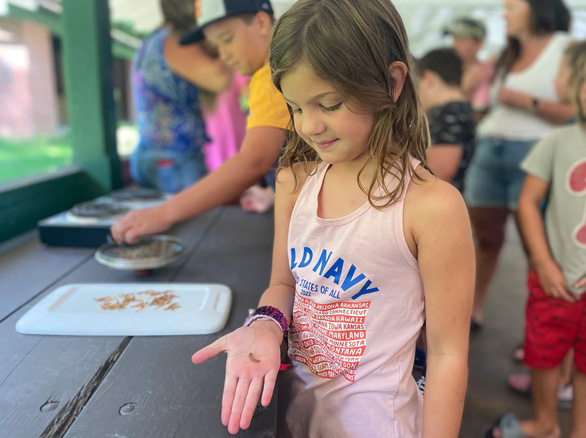

Tờ báo nổi tiếng của Mỹ cổ súy ăn côn trùng khiến dư luận xôn xao
Thế giới - 29/11/2022 16:19
TTO - Một trong những tờ báo uy tín và nổi tiếng nhất của Mỹ - Washington Post kêu gọi xem côn trùng là nguồn thực phẩm chính và chuyển từ ăn thịt sang ăn côn trùng sẽ tốt cho môi trường.
Trong bài báo ngày 27-11, tờ Washington Post (WP) lập luận rằng ăn côn trùng thay vì thịt từ gia súc sẽ có lợi cho môi trường hơn. Tờ báo này khẳng định côn trùng nuôi trong trang trại cũng cung cấp nhiều protein hơn.
Bài báo nói trên là nỗ lực mới nhất trong chuỗi hoạt động mà tờ WP nói riêng và các cơ quan truyền thông khác của Mỹ nói chung thực hiện, nhằm thuyết phục người tiêu dùng về ích lợi của việc ăn côn trùng.
Thực hiện thao tác tìm kiếm trên Google, ta có thể thấy một loạt bài báo về chủ đề này ít nhất là từ năm 2013. Các bài báo có tiêu đề như: "Tại sao côn trùng là một phần lớn hơn trong chuỗi thức ăn của con người?", "Tại sao bạn có thể, nên và sẽ ăn côn trùng?"… Một bài báo từ năm 2019 đặt câu hỏi: "Bạn có ăn côn trùng để cứu hành tinh không?".
WP tuyên bố rằng 2 tỉ người, tương đương 1/4 dân số toàn cầu, đã ăn côn trùng. WP trích dẫn báo cáo dự đoán rằng doanh thu hằng năm của ngành công nghiệp thực phẩm từ côn trùng sẽ lên tới 9,6 tỉ USD vào năm 2030.
"Người tiêu dùng đã có thể tìm thấy các loại thực phẩm như kiến ướp muối trên Amazon và các thanh protein từ dế trong các cửa hàng tạp hóa ở Thụy Sĩ", WP viết.
Những năm gần đây các phương tiện truyền thông Mỹ đã ca ngợi những ưu điểm của việc ăn côn trùng và tờ WP là một trong những đơn vị đi đầu trong việc quảng bá côn trùng là thức ăn.
Tờ WP thuộc sở hữu của tỉ phú Jeff Bezos, người sáng lập Amazon, người được cho rất đam mê ăn côn trùng. Tỉ phú Bezos cũng có mối quan hệ với Diễn đàn Kinh tế thế giới (WEF), nơi đã nhiều lần quảng bá ăn côn trùng là một cách để giảm bớt biến đổi khí hậu.
"Việc quan sát những người khác cũng có thể giúp phá vỡ các rào cản", WP thuyết phục bạn đọc. Tờ báo cũng nêu một trong những giải pháp khả thi để những người nổi tiếng quảng bá việc này.
Theo Đài RT, nhiều người đã e ngại trước những gì tờ WP đang thúc đẩy. Bên dưới bài báo đăng trên Twitter của WP ngày 28-11 có rất nhiều bình luận phản đối.
Nhiều nhà quan sát cho rằng nhân viên của báo WP nên đi đầu trong việc này bằng cách tự ăn côn trùng. Christina Pushaw, thư ký báo chí của Thống đốc Florida Ron DeSantis, thậm chí còn kêu gọi tờ báo: "Hãy dừng lại đi"!


BÌNH LUẬN